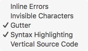

Balthisar Tidy for Work uses standard macOS menus that an experienced or novice user
should find self-explanatory. The menu items’ descriptions below are limited to
the features unique to Balthisar Tidy for Work.
The View menu contains standard macOS View menu items, but also
adds some view-related menu items specific to Balthisar Tidy for Work.
Tidy Options
Toggles the visibility of the Tidy Options pane in the document windows,
as described in Hide the Tidy Options.
Feedback Panel
Toggles the visibility of the feedback panel in the document windows, as
described in Hide the Feedback Panel.
Source Code
Reveals a submenu with additional options, as continued in this table.

Inline Errors
Controls whether or not “red squiggles” appear in the
Source HTML editor to indicate Tidy Message error start positions.
Invisible Characters
Toggles the display of marker characters to indicate
otherwise invisible characters such as tabs, spaces, and linefeeds.
Gutter
Toggles the line number gutter in the Source HTML and
Tidy HTML views. For very large documents, turning off line numbers
may increase performance.
Syntax Highlighting
Toggles the use of syntax highlighting in the
Source HTML and Tidy HTML panels.
Vertical Source Code
Toggles the source area between over-under and
side-by-side views of Source HTML and Tidy HTML.